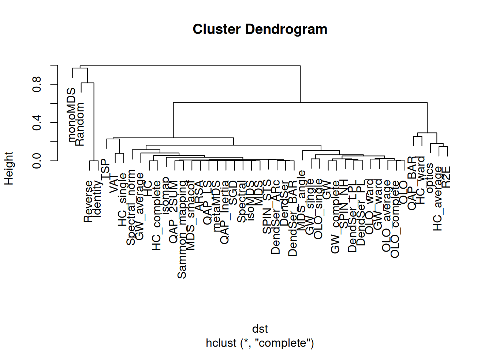
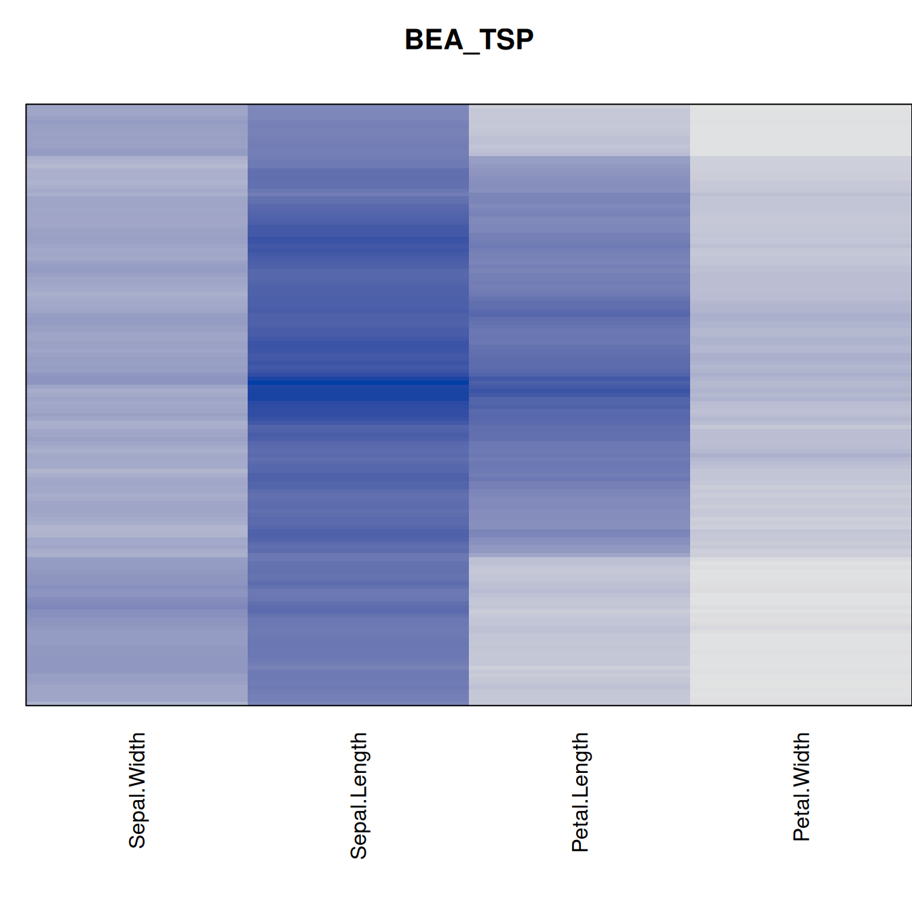
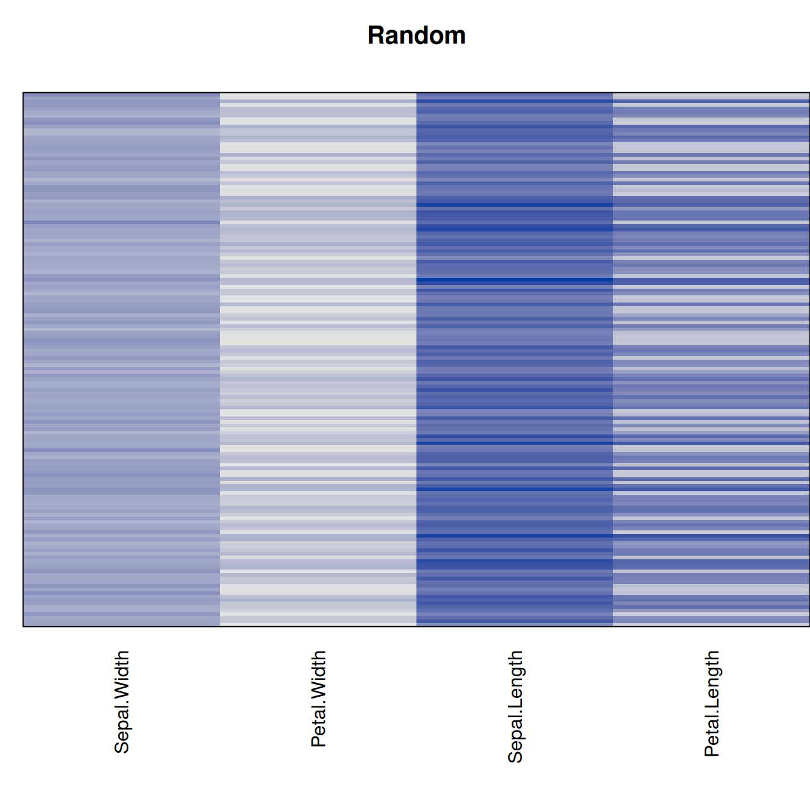

library("seriation")
data("iris")
x <- as.matrix(iris[sample(nrow(iris)), -5])
d <- dist(x)A Comparison of Seriation Methods
Introduction
This document compares the seriation methods available in package seriation using the popular Iris data set and randomize the order of the objects.
Distance seriation
We first register more seriation methods. Some of these methods require the installation of more packages.
register_DendSer()
register_optics()
register_smacof()The following methods will be used (a few slow methods are skipped).
methods <- sort(list_seriation_methods("dist"))
# skip slow methods
methods <- setdiff(methods, c("BBURCG", "BBWRCG", "Enumerate", "GSA"))
methods [1] "ARSA" "DendSer" "DendSer_ARc" "DendSer_BAR"
[5] "DendSer_LPL" "DendSer_PL" "GW" "GW_average"
[9] "GW_complete" "GW_single" "GW_ward" "HC"
[13] "HC_average" "HC_complete" "HC_single" "HC_ward"
[17] "Identity" "isomap" "isoMDS" "MDS"
[21] "MDS_angle" "MDS_smacof" "metaMDS" "monoMDS"
[25] "OLO" "OLO_average" "OLO_complete" "OLO_single"
[29] "OLO_ward" "optics" "QAP_2SUM" "QAP_BAR"
[33] "QAP_Inertia" "QAP_LS" "R2E" "Random"
[37] "Reverse" "Sammon_mapping" "SGD" "Spectral"
[41] "Spectral_norm" "SPIN_NH" "SPIN_STS" "TSP"
[45] "VAT" Details about the method can be found in the manual page for seriate().
We use a loop to run the function seriate() with each method and calculate criterion measures which indicate how good the order is.
orders <- list()
criterion <- list()
for (m in methods) {
cat(m)
tm <- system.time(orders[[m]] <- seriate(d, method = m))
criterion[[m]] <- data.frame(time = tm[1]+tm[2], rbind(criterion(d, orders[[m]])))
cat(" took", tm[1]+tm[2], "sec.\n")
}ARSA took 1.008 sec.
DendSer took 1.144 sec.
DendSer_ARc took 0.924 sec.
DendSer_BAR took 1.152 sec.
DendSer_LPL took 1.029 sec.
DendSer_PL took 1.04 sec.
GW took 0.158 sec.
GW_average took 0.157 sec.
GW_complete took 0.159 sec.
GW_single took 0.159 sec.
GW_ward took 0.158 sec.
HC took 0.163 sec.
HC_average took 0.158 sec.
HC_complete took 0.158 sec.
HC_single took 0.157 sec.
HC_ward took 0.159 sec.
Identity took 0.157 sec.
isomapRegistered S3 method overwritten by 'vegan':
method from
reorder.hclust gclus took 0.325 sec.
isoMDS took 0.491 sec.
MDS took 0.199 sec.
MDS_angle took 0.206 sec.
MDS_smacof took 0.398 sec.
metaMDS took 2.353 sec.
monoMDS took 0.175 sec.
OLO took 0.165 sec.
OLO_average took 0.17 sec.
OLO_complete took 0.17 sec.
OLO_single took 0.163 sec.
OLO_ward took 0.167 sec.
optics took 0.183 sec.
QAP_2SUM took 0.275 sec.
QAP_BAR took 0.205 sec.
QAP_Inertia took 0.202 sec.
QAP_LS took 0.207 sec.
R2E took 0.238 sec.
Random took 0.172 sec.
Reverse took 0.176 sec.
Sammon_mapping took 0.472 sec.
SGD took 156.591 sec.
Spectral took 0.233 sec.
Spectral_norm took 0.253 sec.
SPIN_NH took 4.092 sec.
SPIN_STS took 2.458 sec.
TSP took 0.175 sec.
VAT took 0.168 sec.criterion <- do.call(rbind, criterion)We align the seriation orders. The reason is that an order 1, 2, 3 and 3, 2, 1 are equivalent and just an artifact of the algorithm. Aligning will reverse some orders so they are better aligned. Then we sort the orders from best to worst according to a popular seriation criterion measure called Gradient_weighted.
orders <- ser_align(orders)
best_to_worse <- order(criterion[["Gradient_weighted"]], decreasing = TRUE)
orders <- orders[best_to_worse]
criterion <- criterion[best_to_worse, ]Comparison between methods
We can compare the seriation methods by how similar the orders are that they produce (measured using Spearman). The following code calculates distances between orders and then performs hierarchical clustering.
dst <- ser_dist(orders)
hc <- permute(hclust(dst), order = "OLO", dist = dst)
plot(hc)
The reordered dendrogram clearly shows a group of methods based on hierarchical clustering focused on path length and another group that tries to optimize the other seriation measures.
Here is a table to compare the seriation methods on different criterion measures. Use the interactive table to sort the methods given different measures. Note that some are maximized and some should be minimized. Details about the measures can be found in the manual page for criterion().
library(DT)
datatable(round(criterion, 2), extensions = "FixedColumns",
options = list(paging = TRUE, searching = TRUE, info = FALSE,
sort = TRUE, scrollX = TRUE, fixedColumns = list(leftColumns = 1))) %>%
formatRound(columns = colnames(criterion) , mark = "", digits=1)Visualize the results
Plot the reordered dissimilarity matrices. Dark blocks along the main diagonal mean that the order reveals a “cluster” of similar objects. The Iris dataset contains three species, but two of them are very similar, so we expect to see one smaller block and one larger block.
for (n in names(orders))
pimage(d, orders[[n]], main = n , key = FALSE)


Matrix seriation
Matrix seriation reorders rows and columns of a data matrix. We perform the same steps as for distances in the previous section.
methods <- sort(list_seriation_methods("matrix"))
# AOE if for correlation matrices only
methods <- setdiff(methods, c("AOE"))
methods [1] "BEA" "BEA_TSP" "CA" "Heatmap" "Identity" "LLE"
[7] "Mean" "PCA" "PCA_angle" "Random" "Reverse" Performing seriation.
orders <- list()
criterion <- list()
for (m in methods) {
cat(m)
tm <- system.time(orders[[m]] <- seriate(x, method = m))
criterion[[m]] <- data.frame(time = tm[1]+tm[2], rbind(criterion(x, orders[[m]])))
cat(" took", tm[1]+tm[2], "sec.\n")
}BEA took 1.766 sec.
BEA_TSP took 1.691 sec.
CA took 0.137 sec.
Heatmap took 0.39 sec.
Identity took 0.128 sec.
LLE took 0.385 sec.
Mean took 0.146 sec.
PCA took 0.133 sec.
PCA_angle took 0.129 sec.
Random took 0.127 sec.
Reverse took 0.128 sec.criterion <- do.call(rbind, criterion)Comparison between methods
datatable(round(criterion, 2), extensions = "FixedColumns",
options = list(paging = TRUE, searching = TRUE, info = FALSE,
sort = TRUE, scrollX = TRUE, fixedColumns = list(leftColumns = 1))) %>%
formatRound(columns = colnames(criterion) , mark = "", digits = 1)Visualize the results
best_to_worse <- order(criterion[["Moore_stress"]], decreasing = FALSE)
orders <- orders[best_to_worse]
criterion <- criterion[best_to_worse, ]for (n in names(orders))
pimage(x, orders[[n]], main = n , key = FALSE)




